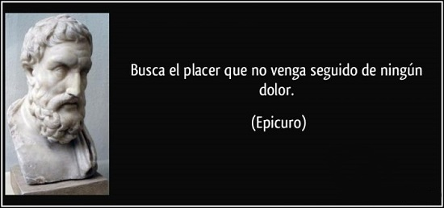
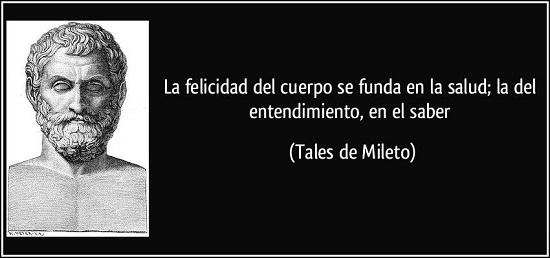
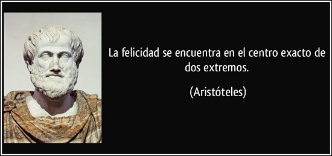

La palabra psicología proviene de las palabras griegas «psique» y «logos» que significan, respectivamente, «alma» y «estudio». Por tanto, psicología viene a significar el estudio del alma. Así, de una forma simple, podríamos decir que la psicología es la ciencia encargada del estudio de la mente y el comportamiento humano.
Se trata de un campo de estudio que intenta explicar qué sucede en nuestra caja negra y cómo afectan estos sucesos a nuestra manera de actuar, teniendo en cuenta el tipo de estimulación que recibimos. En este sentido, la psicología también aspira a saber cómo las personas reciben e interpretan la información que les llega a través de los sentidos.
Por su parte, el término filosofía viene de las palabras griegas «philo» y «sophia» que quieren decir «amor a la sabiduría». La filosofía tiene su fin en la resolución de problemas que se producen en la realidad.
Se centra en el el estudio de una variedad de problemas quizás más trascendentes, como la existencia, el conocimiento, la verdad, la moral, la belleza, la mente y el lenguaje. Esta generalmente realiza sus investigaciones de una manera no empírica, sea mediante el análisis conceptual, los experimentos mentales, la especulación u otros métodos a priori.
En esta página en concreto nos centraremos en conocer un poco mejor que fué la filosofia estoica, que significa hoy en dia aprender a ser estoico y que relación tiene con el pragmatismo.
- 
- 
- 